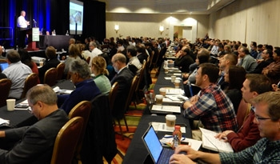
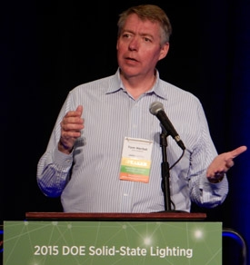
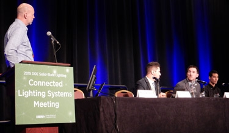
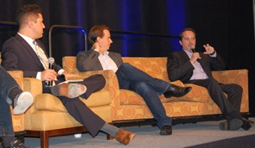
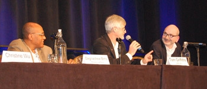
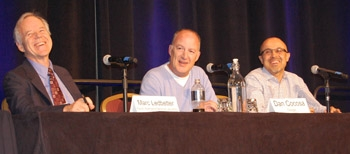

Meeting Presentations and Materials
More than 260 lighting technologists, their counterparts from the semiconductor and IT industries, folks from utilities, and others gathered in Portland, OR, November 16, 2015, to participate in DOE's inaugural Connected Lighting Systems Meeting and start a cross-cutting dialogue about how best to take advantage of the imminent collision between LED lighting systems and the fast-emerging Internet of Things (IoT).
DOE SSL Program Manager James Brodrick recalled that the early SSL market was likened to the “Wild West” because the products didn’t match the performance of the technologies they were intended to replace, and a lack of standards caused a great deal of confusion that was compounded by exaggerated performance claims. He noted that the replacement of today’s lighting infrastructure with connected lighting systems offers not only immediate, proven energy savings, but also the potential to create a data-collection platform that could yield additional energy savings in buildings and cities. But, Brodrick emphasized, much of that potential is still on the table and faces a number of barriers, including configuration complexity, lack of interoperability between system components, and limited ability to measure and report performance.

Tom Herbst of Cisco Systems gave the meeting’s keynote address, which focused on why lighting systems will become more connected. Noting that more and more electrical devices have embedded processors, he defined the IoT as consisting of intelligent network-connected devices that one isn’t accustomed to being connected to networks. Herbst pointed out that lighting is ubiquitous both inside and outside of buildings, and can accommodate many different types of sensors, including imaging sensors that pass information—not just raw images or video—to building owners. He said we probably won’t know what the most interesting applications will be until we build an infrastructure that has less friction to change, noting that “removing the impediments to innovation is one of the biggest reasons for doing the IoT.”
Gabe Arnold of the DesignLights Consortium™ (DLC) spoke about the need for lighting systems to evolve. He observed that although lighting controls have been on the market for decades, they’ve met with limited success, primarily due to a lack of knowledge in how to design, install, commission, and operate them. Arnold described a future where intelligence, communication, sensors, and even energy measurement will be incorporated into every luminaire in a way that’s standardized, interoperable, and interchangeable. He imagined that such self-commissioning products would be purchased the way we currently buy cars—i.e., as a base model that can include optional/advanced features and packages for an extra cost.
Michael Poplawski of Pacific Northwest National Laboratory (PNNL) reviewed the focus areas for DOE and the Connected Lighting Systems Meeting: energy reporting, interoperability, system configuration complexity, key new features, and facilitating stakeholder collaboration. He noted that SSL technology inherently facilitates the integration of intelligence, network interfaces, and sensors into lighting devices, and that enabling intelligent lighting systems with data can result in reduced energy consumption, improved lighting performance, and, potentially, myriad other capabilities and benefits. But Poplawski cautioned that the collected data may enable other revenue streams that compete with lighting and energy performance. However, observing that “you can’t effectively manage what you can’t measure,” he suggested that energy data should not be looked at as of interest solely to DOE.
WHY AND HOW LIGHTING SYSTEMS SHOULD REPORT THEIR OWN ENERGY CONSUMPTION
Kelly Sanders, representing the Northwest Energy Efficiency Alliance, moderated a panel on enabling lighting systems to report their own energy consumption. He noted that SSL is becoming cheaper and more adoptable, while microelectronic devices in general are getting smarter all the time. Sanders listed reasons why utilities should be interested in lighting-system energy data. The main reason, he explained, is that basing incentive programs on energy data has the potential to result in deeper and more persistent energy savings. It could also enable optimization of lighting systems and space utilization, and improve the relationship between utilities and customers, while allowing utilities to simplify and streamline their energy-efficiency programs.
Panelist Michael Poplawski suggested that historical lighting-control deployment strategies have been overly focused on devices that are tightly coupled to installed luminaires, with not enough consideration given to system issues and intangibles such as owner organizational maturity and difficult-to-predict performance and energy savings. After reiterating the opportunity offered by energy data to implement data-driven performance-management processes that hold the promise of increased and more persistent energy savings, he explored a variety of other uses of energy data. While DOE is very interested in the opportunity to facilitate and develop transactive energy markets, Poplawski noted that energy data can create opportunities for a variety of market actors, including utilities and their energy-efficiency programs, energy service companies (ESCOs) and others employing service-based business models, and building owners looking to realize the value of available—and, in the future, perhaps marketable—building-energy services.
Brent Protzman of Lutron discussed the “applied” accuracy needs of energy metering. He defined applied accuracy as the average accuracy a user can expect to achieve on the desired measurement, which includes common load types, typical input values, and aggregation across time and measurements. Protzman emphasized that different end uses of energy data have different accuracy needs, that load type matters when evaluating the accuracy of energy meters, that a single accuracy rating is typically indicative of nominal performance in operation rather than minimum performance, that energy can be estimated mathematically fairly accurately when done right, and that new standards are needed to validate the performance claims of the new class of energy meters and energy-reporting devices and systems.
Jefferay Lawton of Microchip talked about how power and energy reporting can be implemented in connected lighting devices and systems. He discussed and compared centralized vs. distributed measurement, software estimation vs. direct measurement approaches, and various system implementations for direct measurement. Lawton also gave a number of examples of how power or energy measurement provided novel features and benefits. For instance, monitoring has been used in commercial ovens to allow them to adjust their power as equipment ages and conditions change, and it has also been used in coffee makers to provide the manufacturer with a profile of how the machine is being used.
WHERE AND WHEN DO WE NEED INTEROPERABILITY?
A panel discussion on interoperability was moderated by Poplawski, who defined interoperability as the ability of two or more devices, applications, networks, or systems to work together and to reliably and securely exchange and readily use data with a common shared meaning. Distinguishing interoperability from compatibility and interchangeability, he noted that it can be talked about and defined at a number of different levels, most coarsely differentiating between the end-use application and the discernment of information from data, the transport of data, and the physical creation and preparation of data for transport. Poplawski introduced a group of panelists representing industry consortia working to facilitate the development of interoperable devices and systems in various ways.
Roy Harvey of OSRAM SYLVANIA spoke on behalf of the ZigBee Alliance, which was founded in 2002, before there was much (if any) talk about the IoT— making it one of the longest-running efforts that is now focused on serving the IoT. He noted that lighting was the largest category of ZigBee-certified products in the past year, and that ZigBee Light Link was chosen by the Connected Lighting Alliance as the preferred common open standard for residential connected lighting applications. Harvey highlighted the fact that ZigBee 3.0, which is currently in development, will unify the existing, and sometimes competing, ZigBee application standards.
Ivan Judson of Microsoft discussed the AllSeen Alliance, which was formed in late 2013 as a Linux Foundation collaborative project and is based on the AllJoyn software created at Qualcomm. While noting that AllJoyn is in some ways similar to other IoT efforts, such as Brillo/Thread, Open Interconnect Consortium (OIC)/IoTivity, and HomeKit, he highlighted that it’s open-source, currently available, and already shipping in products. Judson pointed out that when developing specifications for an emerging technology, efforts by different consortia that may initially seem to be competing can actually result in solutions that meet different sets of needs.
Remy Marcotorchino of Sierra Wireless talked about oneM2M, which focuses on developing a common machine-to-machine (M2M) service layer that sits just below the device or machine application layer and bridges systems that use different platforms or serve different vertical industries (such as lighting, energy, security, fleet, and environment) while allowing each system to use its own semantic. These bridges provide access to common IoT functions and applications, while letting them focus on their own application logic. “We’re not trying to reinvent the wheel,” Marcotorchino said. “We’re trying to leverage what’s available, from a standards standpoint.”
David McCall of Intel discussed the OIC, starting off by noting that the IoT “isn’t just the things, it’s the entire network.” He differentiated the scope of the OIC—which focuses on developing specifications and certification tools—from a sister organization, IoTivity, which is sponsored and funded by the OIC and serves as a forum and repository for the development of open-source implementations of OIC specifications. McCall further expounded on the strategic decision to separate the two efforts, describing their unique intellectual property-rights policies.
REDUCING LIGHTING SYSTEM CONFIGURATION COMPLEXITY
Christine Wu of the U.S. General Services Administration (GSA) moderated a panel discussion on lighting-system configuration complexity and how important it is to be well matched with user capabilities and experience. She pointed out that reducing that complexity will speed market adoption, and briefly reviewed the Green Proving Ground program, which was established to help GSA meet its energy goals and is evaluating connected lighting in some GSA buildings.
Dagnachew Birru of Philips Lighting focused on self-configuration of connected lighting systems. He noted that to a large degree, self-configuration is about auto-commissioning or simplified commissioning, and explained how advanced analytics can be applied to connected lighting systems so that they become as easy to use as smartphones, which hide their complexity behind a simple interface. Birru reviewed several Philips products that offer simplified self-configuration—including CityTouch and SpaceWise.
Tom Griffiths of ams-TAOS reviewed the role chip-scale integrated sensors combined with local intelligence can play in reducing the configuration complexity of smart lighting. “If the whole commissioning process becomes a painful thing, we’ve achieved nothing,” he said, adding that self-configuration requires knowledge of the space, which sensors can supply. Griffith emphasized that integrating sensors into luminaires—essentially turning them into sensing hubs—both simplifies the incorporation of knowledge-generating sensors into a space and increases the value of the luminaires and lighting system that houses them. “Making lighting intelligent only solves part of the problem,” he noted.
Kishore Manghnani of Orama focused on the role next-generation IoT networks can play in reducing configuration complexity. Reinforcing the oft-repeated reality that networked lighting controls have seen low penetration to date, he laid the blame at expensive and time-consuming commissioning, proprietary and expensive control electronics, and the limitations of existing smart IoT lighting capabilities, all of which make for long paybacks. Manghnani said making the commissioning software-centric rather than hardware-centric can have a significant impact, adding that “the technology is there to make it happen.” He stated that lighting controls can reach 60–70% penetration in the next five years if configuration complexity is reduced this way, but that won’t happen without open standards.
CONNECTED LIGHTING SYSTEMS THAT ARE ALREADY CHANGING THE GAME
Marc Ledbetter of PNNL moderated a panel that looked at some recent examples of installed connected lighting systems that are demonstrating improved lighting energy performance and other benefits. Kaynam Hedayat of Digital Lumens described several connected-lighting projects that both resulted in increased energy savings and provided other benefits. For example, at Ace Hardware, adding daylight and occupancy sensors and grouping the lights into coarse and fine zones yielded a 93% reduction in energy consumption that not only achieved but surpassed the initially predicted 75% savings used to justify the project. At Atlas Packaging, the connected lighting system not only reduced energy consumption but also provided occupancy data that enabled path tracking through the warehouse, which led to optimized inventory placement and reduced warehouse traffic.
Dan Cocosa of Google recounted the path that led to his company deploying connected lighting throughout multiple campuses. He noted that unlike the unsophisticated lighting-control systems of the past, which were mostly only effective in implementing simple “occupied = on, unoccupied = off” energy-management strategies, today’s systems are increasingly more versatile and effective. Cocosa characterized lighting as “low-hanging fruit” as far as energy savings are concerned, especially because California’s new Title 24 requirements mandate controlling at least 50% of the plug load. He noted that at Google’s properties, dimming the lights down to 20% during vacancy is a starting point. Cocosa said his company plans to use occupancy sensors and heat mapping to optimize building-space utilization, to determine what entrances and exits people use the most, and to automatically control lights and HVAC in conference rooms.
Brodrick concluded the one-day meeting by thanking the attendees and speakers for their input and participation, and inviting them to stay for DOE’s 10th annual Solid-State Lighting Technology Development Workshop, which was to begin the following day.
POST-Conference Guided Bus Tour
Portland’s 911 Federal Building was the destination for a preconference guided bus tour that took place the evening of November 16. The tour provided a firsthand look at an LED connected-lighting system that replaced T8 fluorescent lighting in sections of the eight-story building as part of the General Services Administration’s Green Proving Ground program. Tour participants observed in action the Philips SpaceWise system, consisting of 2x2 LED troffers with integral controls and sensors that can share data wirelessly with neighboring luminaires, thereby allowing them to switch, raise, or lower their light output in response to occupancy and daylight – and, in the process, improve their operational efficiency. Participants also had a chance to observe the incumbent T8 fluorescent system on a separate floor, for comparison.